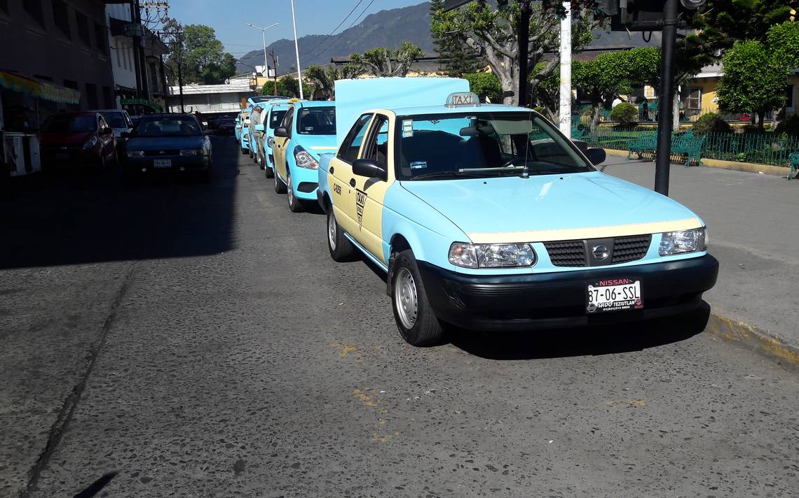

Usuarios del Instituto Mexicano del Seguro Social (IMSS), con pacientes de insuficiencia renal, dieron a conocer un presunto desabasto de equipo para los tratamientos de hemodiálisis, lo que ha originado que dichos enfermos, hayan sido canalizados a una clínica particular, ubicada en la ciudad de Martínez de la Torre Veracruz, generando un deterioro en la salud de estas personas, quienes tienen que viajar una hora y media.
De acuerdo con lo dicho por los familiares de estos pacientes, que son atendidos en el hospital, ubicado en San Cayetano de esta ciudad, han acudido con sus enfermos a las citas marcadas, en las que el servicio les ha sido negado, posponiendo éstas por supuestas fallas en la maquinaria con las que se realizan los tratamientos, generando un notable deterioro en la salud de las personas, quienes muestran hinchazón, entre otras complicaciones, a falta de este procedimiento.
Era taxista de Veracruz, uno de los cuatro cuerpos localizados en Acateno

ACATENO, Pue.- Fue identificado uno de los cuerpos que fueron localizados este domingo en el rancho denominado “Los Coyoles”, en los límites con el estado de Veracruz, mismo que respondía al nombre de Félix Antonio H., de ocupación taxista y con domicilio en el municipio de Martínez de la Torre, Veracruz, cuyo cadáver que localizado semidesnudo, amarrado y con notables huellas de tortura.
En el punto, además del cuerpo de Félix Antonio, también fueron encontrados los cuerpos de otros tres masculinos, cuyos cadáveres presentaban las mismas características y de los cuales hasta el momento no se tiene mayor información, que determinen su origen o identidad.
Reanudará CBTIS de Teziutlán clases el próximo lunes
El próximo lunes serán reanudadas las clases en el CBTIS 44 de esta ciudad, según lo pactado en una reunión celebrada entre padres de familia y trabajadores de esta institución, en la que acordaron emprender acciones de manera conjunta para que Alejandro García Ríos no sea ratificado como director del plantel, por presuntos malos manejos de la administración y mal trato en contra del personal, estudiantes y papás.
Durante esta semana, el personal académico, administrativo y de apoyo emprendió una manifestación de brazos caídos ante la presencia del directivo, cuya administración concluyó el pasado 31 de enero, hecho que originó la inconformidad de los docentes, quienes amenazaron con ir a un paro indefinido, en caso de que siguiera presentándose en la institución.